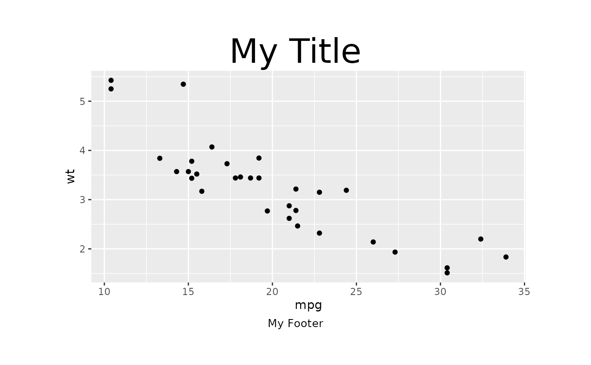

This function creates a gridify object, which represents an object with a specific layout and text elements around the output. The object can be a grob, ggplot2, gt, flextable, formula object. The layout can be a gridifyLayout object or a function that returns a gridifyLayout object.
Arguments
- object
A grob or ggplot2, gt, flextable, formula object. Default is
grid::nullGrob().- layout
A gridifyLayout object or a function that returns a gridifyLayout object. You can use predefined layouts; the
get_layouts()function prints names of available layouts. You can create your own layout, please readvignette("create_custom_layout", package = "gridify")for more information.- elements
A list of text elements to fill the cells in the layout. Useful only in specific situations, please consider using
set_cellmethod to set text elements around the output. Please note the elements list has to have a specific structure, please see the example.- ...
Additional arguments.
Details
The elements argument is a list of elements to fill the cells, it can be used
instead of or in conjunction with set_cell.
Please access the vignettes for more information about gridify.
Note
When setting your text within the elements argument, you can add new lines by using the newline character, \n.
The addition of \n may require setting a smaller lineheight argument in the grid::gpar.
For all layouts with the default scales = "fixed", the layout will automatically adjust to fit the new lines,
ensuring no elements overlap.
Examples
library(magrittr)
object <- ggplot2::ggplot(mtcars, ggplot2::aes(mpg, wt)) +
ggplot2::geom_point()
gridify(
object = object,
layout = simple_layout()
) %>%
set_cell("title", "My Title", gpar = grid::gpar(fontsize = 30)) %>%
set_cell("footer", "My Footer", gpar = grid::gpar(fontsize = 10))
#> gridifyClass object
#> ---------------------
#> Please run `show_spec(object)` or print the layout to get more specs.
#>
#> Cells:
#> title: filled
#> footer: filled

gridify(
gt::gt(head(mtcars)),
layout = complex_layout(scales = "fixed")
) %>%
set_cell("header_left", "Left Header") %>%
set_cell("header_middle", "Middle Header") %>%
set_cell("header_right", "Right Header") %>%
set_cell("title", "Title") %>%
set_cell("subtitle", "Subtitle") %>%
set_cell("note", "Note") %>%
set_cell("footer_left", "Left Footer") %>%
set_cell("footer_middle", "Middle Footer") %>%
set_cell("footer_right", "Right Footer")
#> gridifyClass object
#> ---------------------
#> Please run `show_spec(object)` or print the layout to get more specs.
#>
#> Cells:
#> header_left: filled
#> header_middle: filled
#> header_right: filled
#> title: filled
#> subtitle: filled
#> note: filled
#> footer_left: filled
#> footer_middle: filled
#> footer_right: filled
# We encourage usage of set_cell but you can also use the elements argument
# to set text elements around the output.
gridify(
object = ggplot2::ggplot(data = mtcars, ggplot2::aes(x = mpg, y = wt)) +
ggplot2::geom_line(),
layout = simple_layout(),
elements = list(
title = list(text = "My Title", gpar = grid::gpar(fontsize = 30)),
footer = list(text = "My Footer", gpar = grid::gpar(fontsize = 10))
)
)
#> gridifyClass object
#> ---------------------
#> Please run `show_spec(object)` or print the layout to get more specs.
#>
#> Cells:
#> title: filled
#> footer: filled